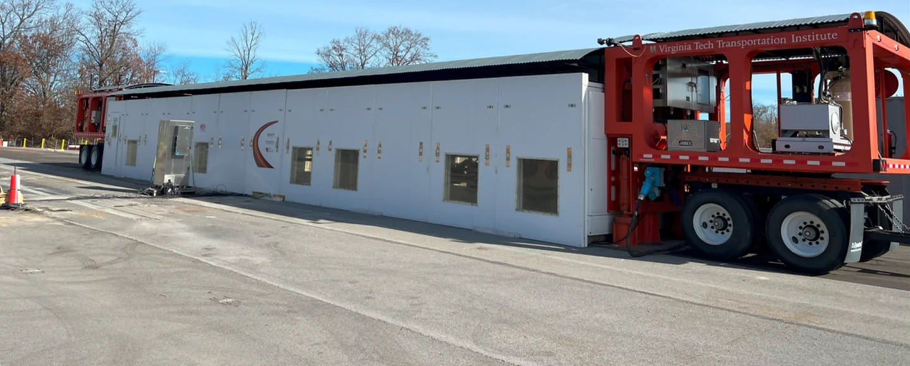

Research instrumentation
Heavy Vehicle Simulator research systems
I restored and verified research computing and data acquisition configurations that support two Heavy Vehicle Simulators at the UC Pavement Research Center.
Explore the measurement path
- Organization
- UC Pavement Research Center
- Research scope
- Two Heavy Vehicle Simulators
- Tools
- Windows, NI CompactDAQ, NI MAX, PowerShell
How the simulator supports pavement research
A Heavy Vehicle Simulator applies repeated, controlled wheel loads to a full-scale pavement section. That accelerates the loading researchers need to study how pavements respond to heavy traffic. The research workstations connect legacy software and sensor instrumentation so the team can collect measurements during those tests.

Restoring the acquisition environment
I recovered Windows and NI CompactDAQ configurations supporting two simulators. On the Windows side, I diagnosed services and NI Configuration Manager issues that affected acquisition. On the instrument side, I restored NI MAX settings and cDAQ communication, then checked that sensors mapped to the intended acquisition channels.
I verified that the restored research applications and instrumentation could exchange data for continued testing.
Diagnosing control and communication faults
I used PowerShell process inspection, logs, and configuration comparisons to investigate legacy control software. That work surfaced overlapping startup processes and mismatched machine parameters. I also tested USB and serial instrument connectivity independently to narrow down where communication was breaking.
From sensor to test record
Open each stage to see what I checked along the measurement path.
Instrument and connection
I used independent USB and serial checks to see whether the instrument could communicate before testing it through the legacy application.
Data acquisition hardware
I restored NI CompactDAQ communication and investigated Windows and NI Configuration Manager services that affected acquisition.
Channel configuration
I restored NI MAX settings and checked that sensors mapped to the intended acquisition channels.
Windows research application
I verified that the restored software could exchange data with the instrumentation. In a separate diagnostic effort, I compared startup processes and configuration parameters to investigate control-software faults.